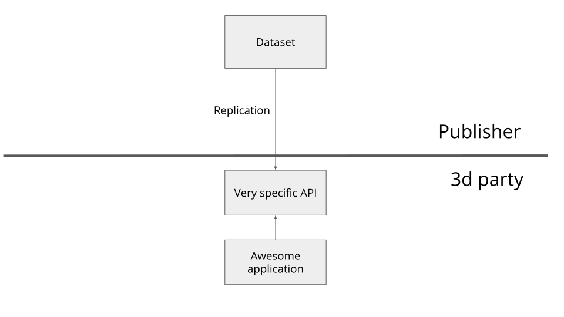

A File-based Linked Data Fragments Approach To Prefix Search
Ruben Dedecker, Harm Delva, Pieter Colpaert, and Ruben Verborgh
IDLab, Ghent University - imec
Why prefix search
But prefix search exists?
Server processing

Client processing
An in between solution?
Our proposal
A file-based architecture for prefix search with an acceptable user-perceived performance that enables clients to take control of the query evaluation process
A file-based architecture for prefix search with an acceptable user-perceived performance that enables clients to take control of the query evaluation process
A file-based architecture for prefix search with an acceptable user-perceived performance that enables clients to take control of the query evaluation process
A file-based architecture for prefix search with an acceptable user-perceived performance that enables clients to take control of the query evaluation process
A file-based architecture for prefix search with an acceptable user-perceived performance that enables clients to take control of the query evaluation process
Related work

Related work
Linked Open Vocabularies
Pelias
Linked Data Fragments
Triple Pattern Fragments
Developments
client query execution
query continuation
Fragmentation and traversal
A client independent fragmentation
Fragment a collection Self-describing requires semantic descriptionsA TREE specification
{
"@context":"https://w3id.org/tree#",
"@id":"#Dataset",
"@type":"tree:Collection",
"tree:shape":"#entityShape",
"tree:view":{
"@id":"node1.jsonld",
"tree:relation":[
{
"@type":"tree:GreaterThanRelation",
"tree:path":"foaf:name",
"tree:value":"Alice",
"tree:node":"node2.jsonld",
},
...
]
},
"tree:member":[...]
}
A tree structured fragmentation
Fragment using B-tree More explanation?A generic client
prefixSearch(nodeId, prefix, path?) {
//Request a fragment over HTTP
dataFile = fetch(nodeId)
members, nodes, relations = extractMetadata(dataFile)
//Emit data entities matching the prefix
emit(matchPrefix(members, prefix, path))
//Group available relations per child node
for (relationgroup of groupPerChildNode(relations)) {
//$\textcolor{olivegreen}{\chi}$ is based on the relation type
relation = relationgroup.next()
$\chi$ = buildFunction(relation.type)
while (relation && matchPath(relation.path, path) && $\chi$(prefix, relation.value)) {
relation = relationgroup.next()
$\chi$ = buildFunction(relation.type)
}
if (!relation)
prefixSearch(relation.node, prefix, path)|\label{recurse}|
}
}
Experiments
| Dataset | transport stops | Open Street Map |
|---|---|---|
| entities | 73k | 3.87m |
| triples | 438k | 125m |
Cache efficiency
transport stops

Efficiency & bandwidth
efficiency - stops
bandwidth - stops

Query performance
Belgium transport stops

Open Street Map

Fragment sizes
Belgium transport stops


Open Street Map

Results
- Cache efficiency
- Query performance
- Efficiency & bandwidth
- Fragment sizes
Discussion
- Flexibility
- http request scale with fragmentation structure
- caching behavior
What works
- acceptable user perceived performance
- High cache hit ratios
- Generalizable to different search spaces using different indexing structures
- Generic client
Challenges
- Fragmentation size
- Multi-index searches
- Live data
Where do we go from here
- Expand to other search spaces such as geographical tiling
- Explore fuzzy matching